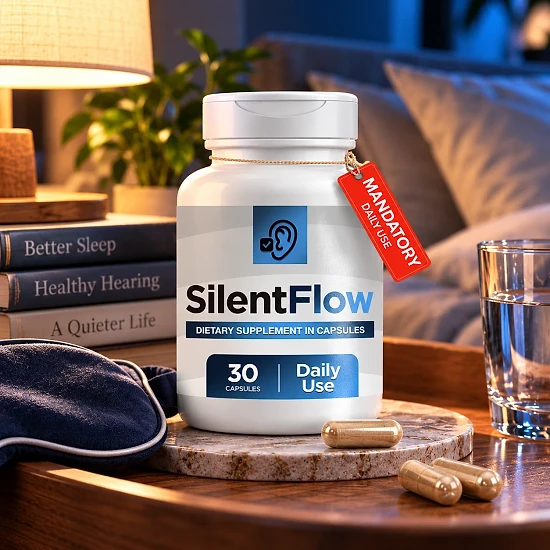
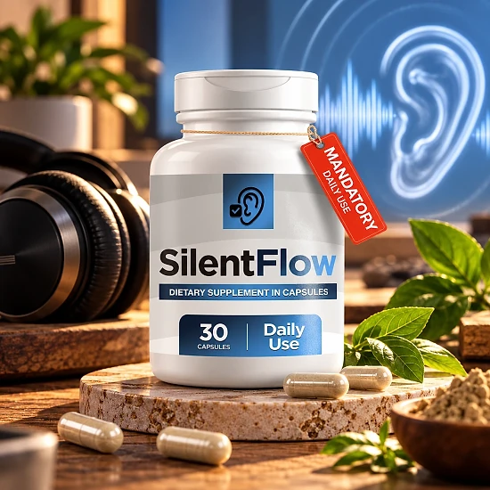

What Is SilentFlow And How Does It Work?
SilentFlow is a dietary supplement in capsule form made for a simple once-daily routine. According to the official website, each bottle contains 30 capsules, with one capsule per serving, which equals a 30-day supply when used as the label suggests.
The formula combines 80 mg of magnesium (as magnesium glycinate) with a 575 mg proprietary blend that includes Alpha Lipoic Acid, Butcher's Broom root extract, L-Carnitine, Turmeric extract standardized to 95% curcuminoids, and Coenzyme Q10. The capsule itself is vegetable-based, made of hypromellose.
How is it meant to work? Here the official website is unusually careful. It does not attribute a specific function or benefit to any ingredient, and it says no statement on the page should be read as a promise of a particular result. The brand focuses instead on label transparency: the full Supplement Facts, other ingredients, directions, warnings, and storage instructions are shown before purchase.
The bottle's design features an ear icon, and the product is often discussed in the context of hearing wellness. However, the official FAQ is direct: SilentFlow is not presented as a treatment for hearing loss, tinnitus, or any other medical condition, and anyone with symptoms should see a qualified healthcare professional.
The website describes SilentFlow as intended for adults 18 and older who have read the full label and, when appropriate, discussed it with a healthcare professional.
Results are not guaranteed. The FAQ states that individual experiences with supplements vary and that the brand does not promise a specific result or timeline.
SilentFlow is a dietary supplement and is not intended to diagnose, treat, cure, or prevent any disease.
SilentFlow Ingredients
The official website displays the complete Supplement Facts panel. Each one-capsule serving contains:
Magnesium, 80 mg (19% of the Daily Value): provided as magnesium glycinate, a common and gentle form of this essential mineral.
Alpha Lipoic Acid and Coenzyme Q10 (as Ubiquinone): two antioxidant compounds the body also produces naturally.
Butcher's Broom (Ruscus aculeatus) Root Extract: a traditional botanical often used in circulation formulas.
L-Carnitine: an amino acid derivative involved in energy metabolism.
Turmeric (Curcuma longa) Rhizome Extract: standardized to 95% curcuminoids.
These ingredients share a 575 mg proprietary blend, so the individual amounts are not listed on the label. The other ingredients are hypromellose (vegetable capsule), microcrystalline cellulose, magnesium stearate, stearic acid, and silicon dioxide. The website notes that it states no ingredient function or benefit beyond what appears on the label.
The descriptions above reflect how these ingredients are generally known, not claims made by the brand. Because the blend amounts are not disclosed, it is not possible to compare the doses with those used in published research. Always check the bottle you receive against the label shown on the official website.
SilentFlow Side Effects
The official website does not list specific side effects, but it publishes the full warnings from the label. The most important one: consult a physician before use, especially if you take medication or have a medical condition.
The label also says the product is not for anyone under 18 or for pregnant or nursing mothers. Keep it out of reach of children, and do not use it if the safety seal is damaged or missing.
Some ingredients deserve a conversation with your doctor. Alpha Lipoic Acid may affect blood sugar, so people taking diabetes medication should ask first. Turmeric and Butcher's Broom may not suit people on blood thinners or with certain circulation or blood pressure concerns, and Coenzyme Q10 can interact with some medicines. Magnesium in higher amounts may cause loose stools in sensitive people.
Because the individual amounts in the blend are not disclosed, it is a good idea to bring the label to your healthcare provider. Stop using the product and seek medical advice if you notice any unusual reaction, and pay attention to how you feel during the first weeks of use, especially if you take other supplements.
SilentFlow Dosage
The label's suggested use is simple: take one (1) capsule daily. One bottle contains 30 capsules, so it lasts about a month when used as directed.
The official website outlines three steps: read the complete label, take one capsule daily according to the suggested use, and do not exceed the recommended dose. Taking the capsule at the same time every day, such as with breakfast and a glass of water, can make the routine easier to remember.
The website does not give a timeline for results. Its FAQ explains that experiences with dietary supplements vary and that SilentFlow does not promise a specific outcome, so it should be used only as directed.
For storage, the label says to keep the bottle in a cool, dry place below 30°C (86°F), out of reach of children.
SilentFlow is meant to be one part of a healthy routine that includes balanced meals, regular activity, good sleep, and regular checkups. If you take medication, have a medical condition, or have concerns about your hearing, speak with your healthcare provider before starting and keep following their advice.
SilentFlow – Refund Policy
According to the official refund policy, SilentFlow is covered by a 60-Day Unconditional Money-Back Guarantee. If you are not satisfied for any reason, you can contact support within 60 days of your purchase date for a full refund, "no questions asked".
Step 1 – Contact support: send an email to support@shippingcaps.com with your order number and a short description of the reason for your request.
Step 2 – Return the product if asked: the policy says unopened products are refunded in full upon request. If your request requires returning the product, ship it to 19655 E 35th Dr #100, Aurora, CO 80011, United States. The policy also mentions that, in some cases, a partial refund may be offered while you keep the product, evaluated case by case.
Step 3 – Receive your refund: the policy states that refunds are typically processed within 3 to 5 business days.
The policy does not say who pays return shipping, so confirm this with support before mailing anything. Orders go through a JVZoo checkout, so keep your order confirmation email. Read the complete policy on the official website before you order, and note your purchase date so you stay within the 60-day window. Keeping the bottles and packaging until you decide is also wise.
SilentFlow – Where To Buy
SilentFlow is sold through its official website, with orders completed through a secure JVZoo checkout. According to the website, shipping is available only within the United States.
Bottles listed by unknown third-party sellers may look the same, but there is no way to verify their origin or how they were stored, which raises real concerns about quality and safety. Purchases made outside the official source may not be covered by the 60-Day Money-Back Guarantee.
That is why most buyers prefer to order SilentFlow directly from the official website. Going to the source means receiving the authentic original product, with access to the support team and the full guarantee.
Before completing your order, make sure you are on the official SilentFlow website to avoid counterfeit products. Checking the web address in your browser before you pay takes only a moment and helps protect your order and your money from copycat websites.
To ensure you’re getting the authentic product, most users choose to visit the official website.
Is SilentFlow A Scam?
Based on the official website, SilentFlow appears to be a real dietary supplement, sold through the established JVZoo platform and presented with an unusual level of label transparency for a once-daily capsule.
Several points speak in its favor: the full Supplement Facts panel and other ingredients are shown, the directions and warnings are clear, there is a support email, a refund policy with a return address, and a 60-day money-back guarantee. The website also avoids exaggerated promises and states plainly that it is not a treatment for hearing loss or tinnitus.
There are also points to keep in mind. Most of the formula sits inside a 575 mg proprietary blend, so individual amounts are unknown. The website does not explain what the product is meant to do beyond the label, and it publishes no customer reviews or testimonials of any kind. Shipping is limited to the United States.
For adults who want a simple once-daily capsule with magnesium, antioxidants, and botanicals, SilentFlow may be worth considering, ideally ordered from the official website and discussed with a doctor, especially by anyone taking medication or dealing with hearing symptoms that need a medical evaluation.
For those who want to verify product details or check current availability, the official SilentFlow website remains the safest option.

Check Availability On Official Website